论文图集 · 2026-10-04
保留12张正文图，另附3张补图。使用Nature Figure从既有数据重绘，完整图注及来源随图交付。PDF/SVG为可编辑矢量版，PNG/TIFF为600 dpi；实测LOFAR为高分辨率栅格图层。图11保留133 Hz例真实的峰位转换，不把带内最大值增量误写成已确认同一目标的增强。
图1 运动与传播几何
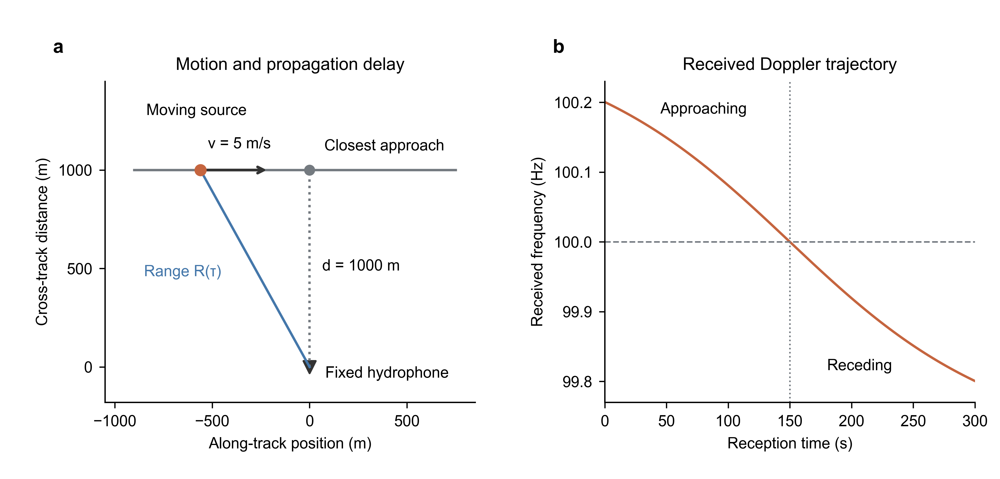
图1 运动几何与接收频率。示意参数为声源频率100 Hz、速度5 m/s、最近距离1000 m、声速1500 m/s；接收端最近通过时刻150 s。频率按原因果传播方程计算，横轴为接收时间。此图解释信号模型，不是估计结果或性能试验。
图2 误差结构与相干输出
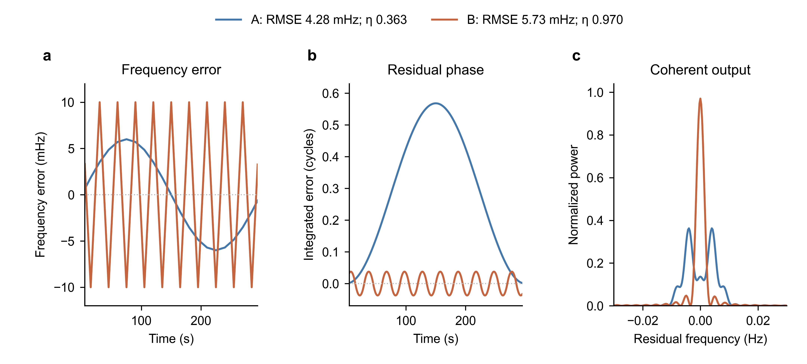
图2 频率误差的时间结构决定残余相位。完整复用原21节点无噪声构造，不运行估计器。误差A幅度较小但变化缓慢，B幅度较大且交替变号。评价区间[5,295) s，η为±2 Hz内离散FFT最大值；图中仅放大±0.03 Hz。所有绘制曲线及RMSE、η重建与原表差小于1e−8。该例说明RMSE不能唯一决定相干输出，不代表实际前端普遍反序。
图3 局部自适应处理结构
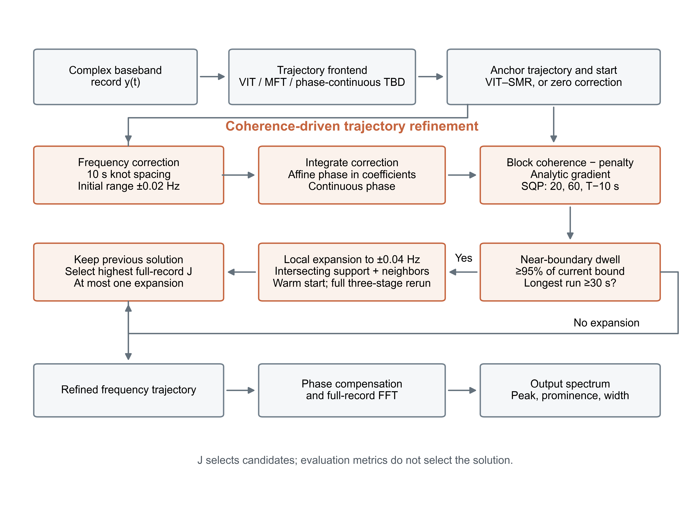
图3 最终方法的处理结构。修正族为10 s节点的分段线性频率残差，积分得到系数的仿射相位。基础系数盒界对应±0.02 Hz；在20 Hz评价网格上，达到当前局部边界95%的最长连续驻留≥30 s时，放宽与相应时段相交的帽函数节点及其邻居至±0.04 Hz，仅扩张一次。扩张后由上一轮解起步重跑三个阶段，显式保留上一轮解，按全长正则目标J选择。频率检查点约束同时保留。
图4 节点间隔与计算量
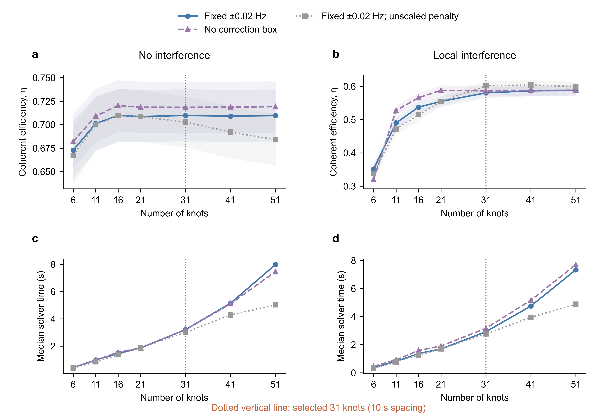
图4（补图S1同数据）开发集节点扫描。每个设置使用相同840条记录；每场景7个SNR单元等权均值，阴影为2000次场景内种子成簇bootstrap的95%区间。下方求解耗时为六工作进程负载下的描述性中位数，不是串行基准或置信区间。未缩放正则对照在21节点复用相同基线。31节点由预定95%收益规则选出，不宣称数学最优；更密节点仍可有小幅差别。
图5 开发集修正范围比较
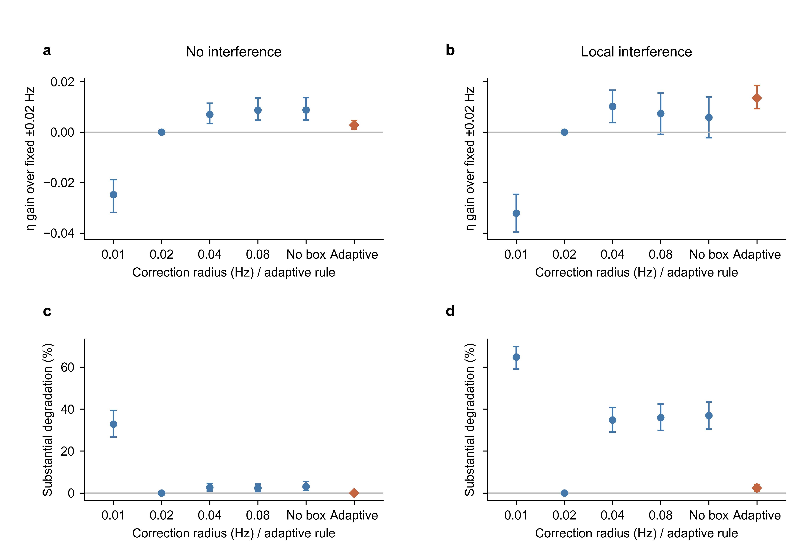
图5 开发集修正范围比较。全部840条配对记录均保留，均值及95%种子成簇区间沿用审核结果。上排为相对固定±0.02 Hz的η差；下排为η低于同记录固定±0.02 Hz超过0.01的比例。No box仅移除修正系数盒界，保留频率检查点约束。Adaptive为开发规则选出的局部扩张方法。开发结果用于选参数，正式性能见确认集。
图6 独立确认集主结果
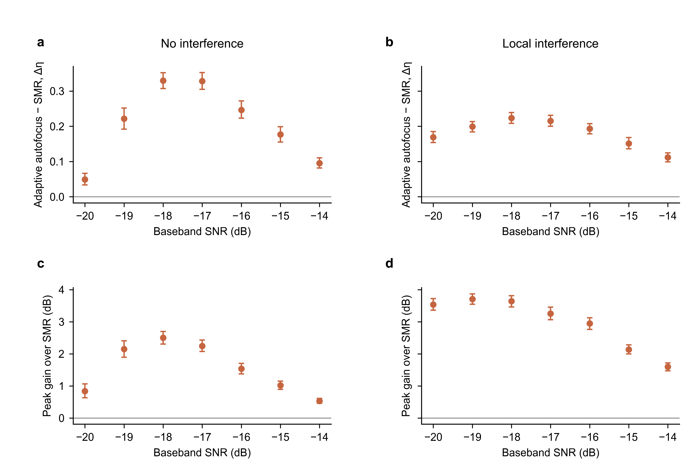
图6 独立确认集的同起点增益。两场景×7个SNR，每单元200条，共2800条；点为最终自适应方法相对同记录SMR的配对均值，误差棒为预先计算的2000次配对bootstrap逐单元95%区间，不是14单元同时置信带。上排为纯目标相干效率增量，下排为含噪观测谱峰增量。全部14单元的两个指标区间下界均为正。合并η+0.193628、谱峰+2.259411 dB。
图7 确认集收益与退化取舍
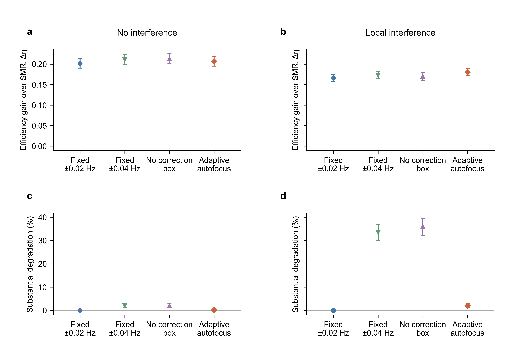
图7 确认集的修正范围取舍。每场景7个SNR单元等权汇总，点与误差棒为配对均值或比例及2000次种子成簇95%区间。上排相对SMR，下排退化定义为η_method < η_fixed0.02−0.01。无干扰下自适应相对去盒界η低0.005982；有干扰下自适应退化率约2.0%，固定0.04与去盒界约33.6%和35.9%。合并非劣结论不代表逐场景非劣。
图8 积累时长与计算量
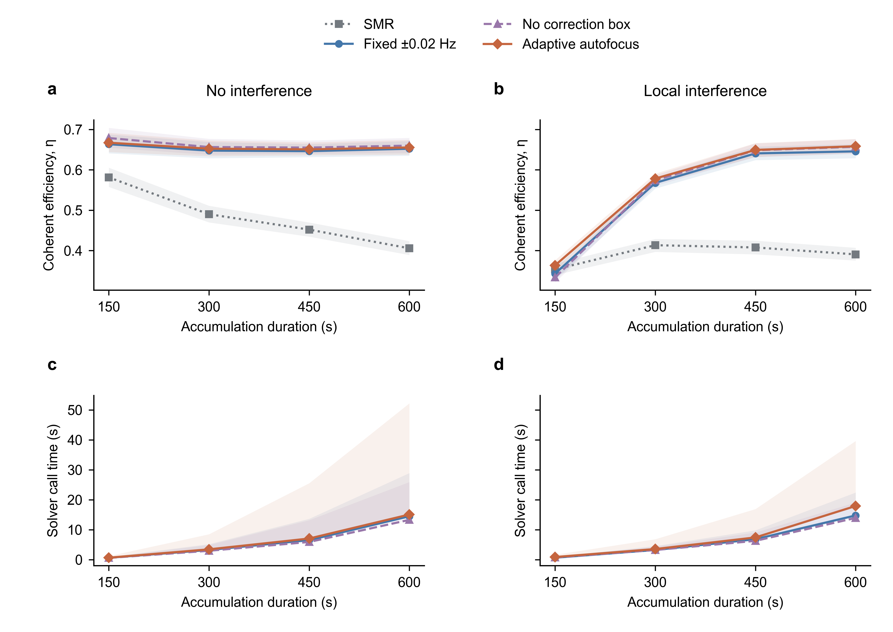
图8 积累时长与计算量。2400条记录，场景内100个种子同时携带3个SNR及4个时长。上排点和阴影为SNR单元等权均值与2000次种子成簇95%区间；下排线为中位数，阴影为中位数到90%分位，不是置信区间。时间为六工作进程负载下的求解调用耗时。所有时长节点间隔固定10 s，节点数、正则和预算按冻结规则缩放。局部干扰持续时间按协议不随T同比增长，因此该图支持所测设计下的时长收益，不能单独归因于累积相位误差。
图9 四种前端的配对收益
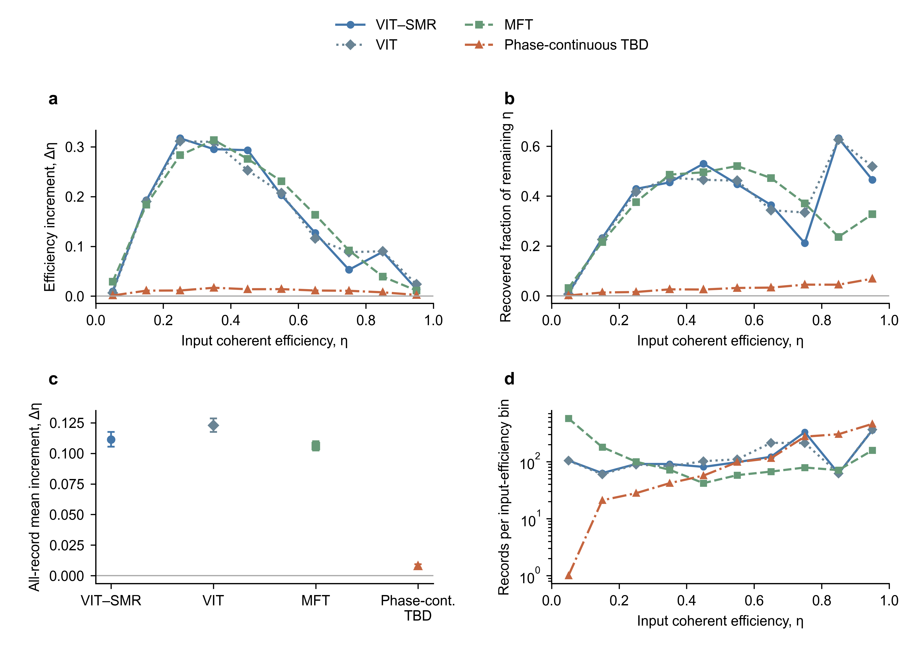
图9 四种前端后的收益。每种前端同样使用1400条记录，所有记录保留。a,b为预定0.1宽入口η分箱的描述性均值，连接线只引导阅读，不是拟合；b仅对入口η<0.95计算(η_out−η_in)/(1−η_in)，未显示推断区间。c为全部14个场景×SNR单元等权配对增量及2000次场景内种子成簇95%区间，来自审核汇总。d显示每箱记录数以说明样本分布，纵轴为对数。MFT入口可用子集仅6/14非空单元，不能给出预定14单元等权区间；另见汇总表。相位连续TBD增益较小且区间为正，不证明各前端收益相同。
图10 全部105个实测案例
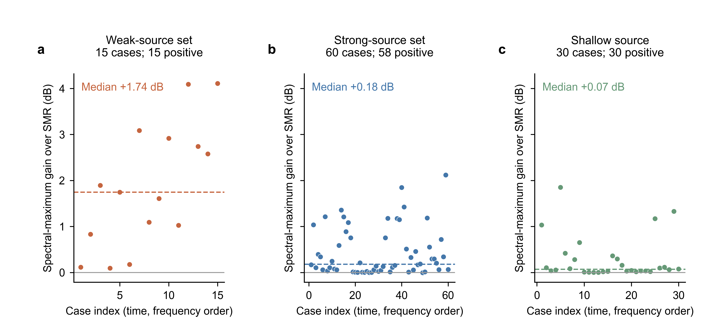
图10 预筛通过的全部105个实测频点×时段。点为搜索频带内最大观测谱峰相对SMR的增量，虚线为组中位数，灰线为零。弱/强/浅源分别15/60/30例；弱线组按预列源级Set2–5定义，不是估计的接收SNR；Set5的120 dB为推断且只有1个通过案例。所有案例共享同一航次，故不做独立重复解释或显著性检验。正峰增量并不自动确认目标身份，预定133 Hz案例的边缘峰见图11。
图11 预定实测谱：全带与局部
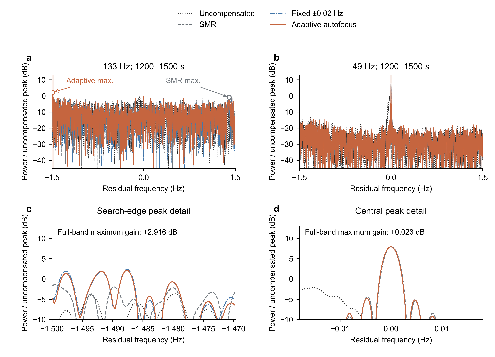
图11 运行前按可见性冻结的133 Hz弱源案例与同时段49 Hz强源对照。上排保留完整±1.5 Hz搜索带，下排以最终方法的最大值为中心放大±0.018 Hz并截在候选带内；阴影指示放大范围。各曲线均为原始、无平滑、整段矩形FFT |FFT|²/N，以同案例未补偿周期图的候选带最大值为0 dB。标注增量按各方法全频带最大值之差计算，不是同一频率处的纵向差。133 Hz案例SMR最大值在+1.399231 Hz，自适应最大值在−1.487732 Hz，不能把+2.915560 dB解释为已确认同一目标主瓣增强；同时自适应比固定0.02的峰值低0.191917 dB。49 Hz自适应与固定0.02重合，相对SMR仅+0.022533 dB。案例没有按增益替换。
图12 连续LOFAR、轨迹与时长
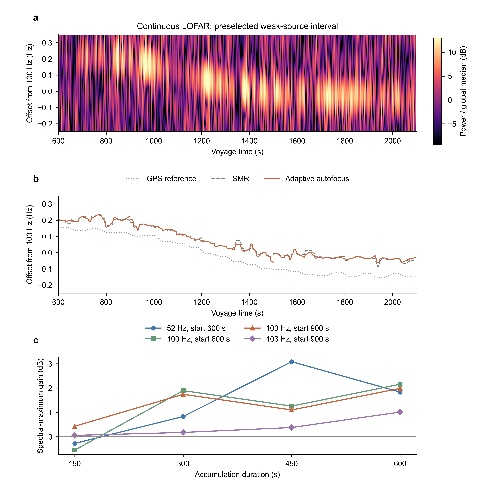
图12 连续时频背景、估计轨迹及嵌套时长窗口。a为预定100 Hz、600–2100 s案例的连续LOFAR，从已冻结0–3000 s基带按原Hann200、步长20、NFFT8192计算，1500帧中原有1455帧与旧值最大差4.98e−14 dB，新增45个真实边界窗口，没有插值或平滑填空。颜色相对整幅原矩阵全局中位数，色限取全局8%与99.5%分位，频率显示−0.25至+0.35 Hz。b分段显示原SMR、自适应轨迹及GPS参考，GPS不是真值。c保留全部4个预定起点×4个时长，含103 Hz竞争脊案例以及100 Hz、900 s旧窗口替换；150 s两负两正，300–600 s均为正但曲线非单调。100 Hz两个起点重叠，共涉及3个频点，并非4个独立样本。
补图S1 补图S1：开发集观测谱峰
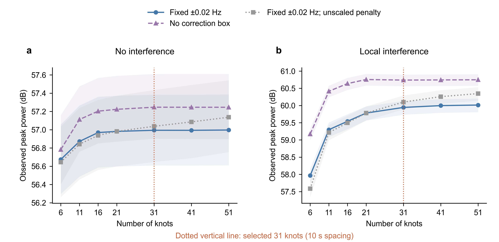
图4（补图S1同数据）开发集节点扫描。每个设置使用相同840条记录；每场景7个SNR单元等权均值，阴影为2000次场景内种子成簇bootstrap的95%区间。下方求解耗时为六工作进程负载下的描述性中位数，不是串行基准或置信区间。未缩放正则对照在21节点复用相同基线。31节点由预定95%收益规则选出，不宣称数学最优；更密节点仍可有小幅差别。
补图S2 补图S2：确认逐单元配对差
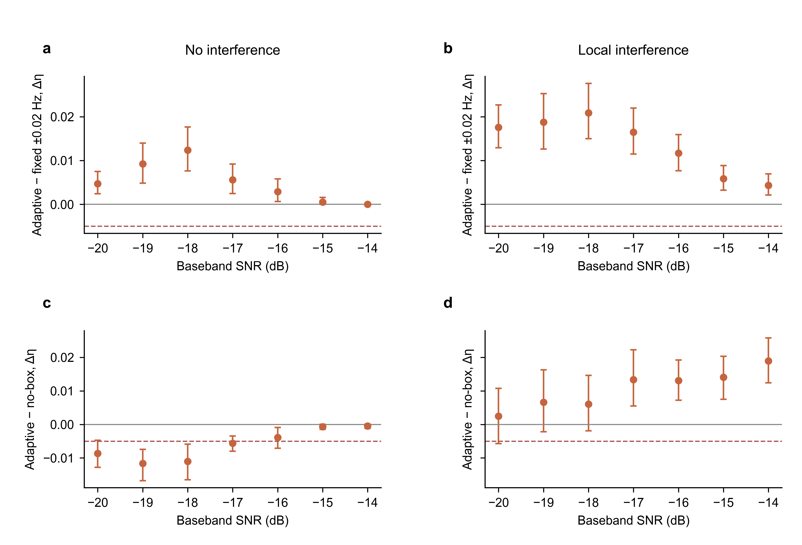
补图S2 14单元配对修正范围比较，均值与逐单元配对95%区间。虚线−0.005在上排为单元系统性退化阈值，在下排仅作合并非劣界的数值参考；正式P1/P2判定使用合并种子成簇区间，不要求各单元通过，也不宣称逐单元非劣。
补图S3 补图S3：前端RMSE诊断
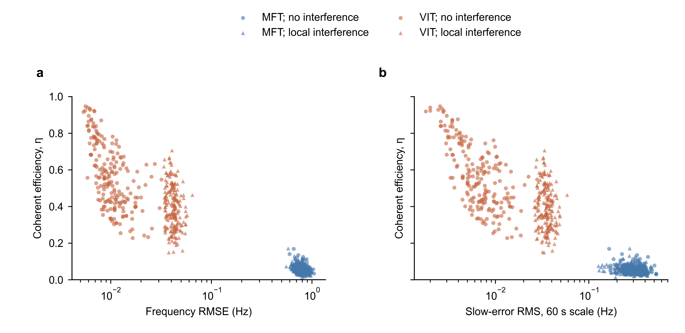
补图S3 已修正E0的全部400对MFT/VIT轨迹，800个估计器输出；左为评价区间内频率RMSE，右为60 s尺度慢误差RMS，横轴均为对数以展开较小误差处的点，未抽样、未抖动、未拟合。颜色分前端，形状分场景。η使用修正后纯目标计算，来自旧前端诊断而非最终模块试验。此前端质量差异很大的集合未观察到配对RMSE–η反序，因此图2构造例只能说明可能性。